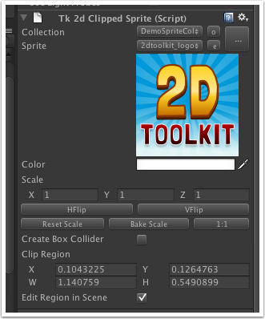
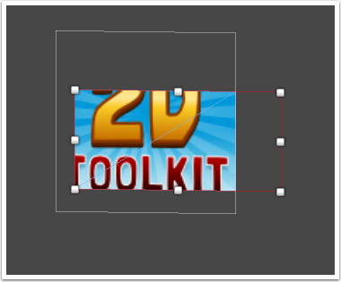

Documentation
Script Reference
Forum
Documentation
Script Reference
Forum

Create Box Collider - If ticked, a tight fitting box collider will be created around this sprite. You can adjust the collider depth on the collider itself.
The anchor point of a clipped sprite is defined in the sprite collection. This is intentional, to make the clipped sprite behave exactly like a normal sprite.
Clip Region - Describes the clip region. Everything outside this region will be clipped away. 0, 0 = bottom left. 1, 1 = top right. You can see and manipulate the clip region in the scene by clicking the Edit Region in Scene button.
